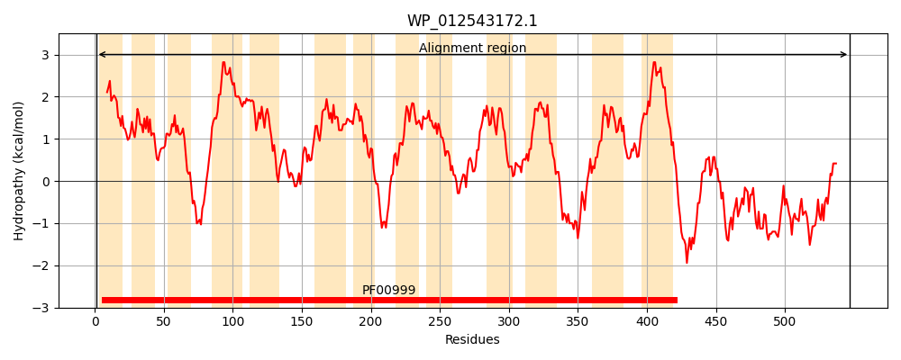
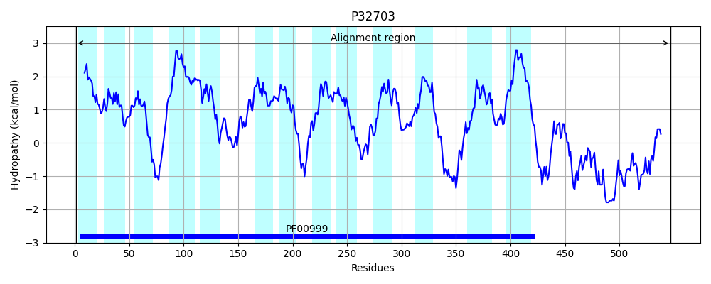
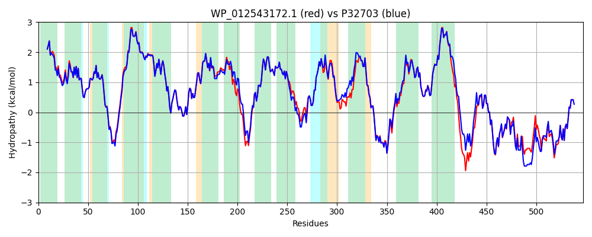

Hit Accession: P32703
Hit TCID: 2.A.36.3.1
Hit Description: gnl|BL_ORD_ID|9851 gnl|TC-DB|P32703|2.A.36.3.1 PUTATIVE NA(+)/H(+) EXCHANGER YJCE - Escherichia coli.
Mach Len: 547
e:0.000000
Query TMS Count : 13
Hit TMS Count: 13
TMS-Overlap Score: 12.000000
Predicted Substrates:None
BLAST Alignment:
Score: 2538 , Bit scores: 982 bits, E-value: 0.0e+00, Alignment length: 547, Percentage identity: 92
Query: 1 MEIFFTILIMTLVVSLSGVVTRVLPFQVPLPLMQIAIGALLAWPTFGLHVEFDPELFLVLFIPPLLFADGWKTPTREFIEHGREILGLALALVVVTVVGIGFLIYWIVPGIPLIPAFALAAVLSPTDAVALSGIVGEGRIPKKIMGILQGEALMNDASGLVSLKFAVAVAMGTMVFTVGGATVEFLKVAIGGVLAGFVVSWSYGRSMRFLSRWGGDEPATQIVLLFLLPFASYLIAEHIGVSGILAAVAAGMTITRSGVMRTAPLAMRLRANSTWAMLEFVFNGMVFLLLGLQLPDILSSSLVAAEADPNVETWMLFTDIILIYAALMLVRFGWLWSMRKLSQRFLKKKPMEFGSWTTRELLISSVAGVRGAITLAGVLSIPLLLPDGNVFPARYELIFLAAGVILFSLFVGVIALPILLRHIESSDNVQQRKEERLARAATADVAIVAIQKMEERLAADTKENIDNQLLTEVSSRVIGNLRRRVDGRNDVETSMLEESLERRFRLAALRSERGELYHLRATRQISNETLQKLLHDLDLLEALLIED 547
MEIFFTILIMTLVVSLSGVVTRV+PFQ+PLPLMQIAIGALLAWPTFGLHVEFDPELFLVLFIPPLLFADGWKTPTREF+EHGREI GLALALVVVTVVGIGFLIYW+VPGIPLIPAFALAAVLSPTDAVALSGIVGEGRIPKKIMGILQGEALMNDASGLVSLKFAVAVAMGTM+FTVGGATVEF+KVAIGG+LAGFVVSW YGRS+RFLSRWGGDEPATQIVLLFLLPFASYLIAEHIGVSGILAAVAAGMTITRSGVMR APLAMRLRANSTWAMLEFVFNGMVFLLLGLQLP IL +SL+AAE DPNVE WMLFT+IILIYAALMLVRFGWLW+M+K S RFLKKKPMEFGSWTTRE+LI+S AGVRGAITLAGVLSIPLLLPDGNVFPARYEL+FLAAGVILFSLFVGV+ LPILL+HIE +D+ QQ KEER+ARAATA+VAIVAIQKMEERLAADT+ENIDNQLLTEVSSRVIGNLRRR DGRNDVE+S+ EE+LERRFRLAALRSER ELYHLRATR+ISNETLQKLLHDLDLLEALLIE+
Sbjct: 1 MEIFFTILIMTLVVSLSGVVTRVMPFQIPLPLMQIAIGALLAWPTFGLHVEFDPELFLVLFIPPLLFADGWKTPTREFLEHGREIFGLALALVVVTVVGIGFLIYWVVPGIPLIPAFALAAVLSPTDAVALSGIVGEGRIPKKIMGILQGEALMNDASGLVSLKFAVAVAMGTMIFTVGGATVEFMKVAIGGILAGFVVSWLYGRSLRFLSRWGGDEPATQIVLLFLLPFASYLIAEHIGVSGILAAVAAGMTITRSGVMRRAPLAMRLRANSTWAMLEFVFNGMVFLLLGLQLPGILETSLMAAEIDPNVEIWMLFTNIILIYAALMLVRFGWLWTMKKFSNRFLKKKPMEFGSWTTREILIASFAGVRGAITLAGVLSIPLLLPDGNVFPARYELVFLAAGVILFSLFVGVVMLPILLQHIEVADHSQQLKEERIARAATAEVAIVAIQKMEERLAADTEENIDNQLLTEVSSRVIGNLRRRADGRNDVESSVQEENLERRFRLAALRSERAELYHLRATREISNETLQKLLHDLDLLEALLIEE 547 | Protein Hydropathy Plots: |
|---|
|  |  |
Pairwise Alignment-Hydropathy Plot:
|
|---|
|  |